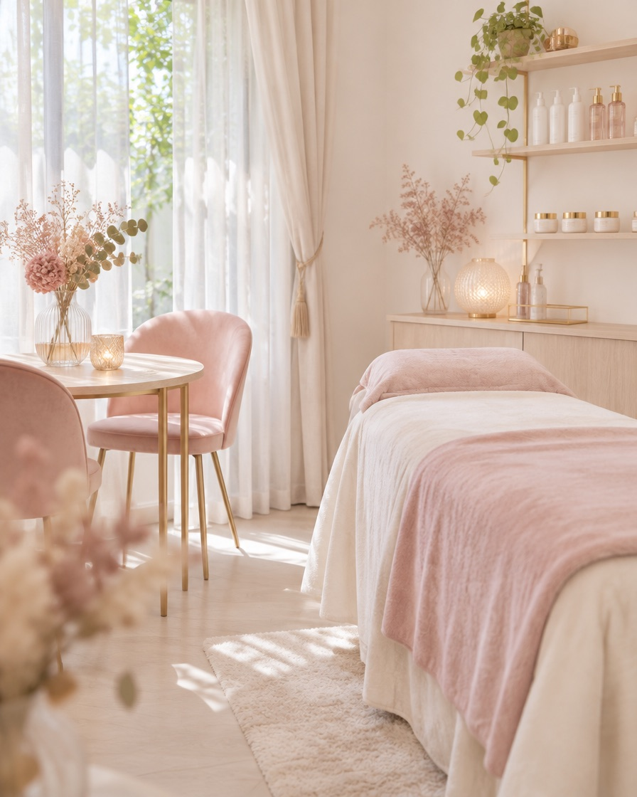

ライト開設セット
まずは公式LINEを持ちたい方に
- アカウント開設・基本設定（プロフィール・あいさつメッセージ）
- 友だち追加のQRコードとリンクの発行
- 自動応答の設定（1〜2本）
チラシやSNSにQRコードを貼って、今日から友だちを集められる状態でお渡しします。
LINE Official Account & Instagram
ライブやイベントの告知、お店のお知らせとご予約の入口。
インスタで見つけてもらい、公式LINEでつながり続ける。その形を、開設から「使える状態」まで整えます。
文章は、お話を伺いながら私がまとめます。原稿を書いていただく必要はありません。

プロフィールも、あいさつメッセージも、ハイライトの文章も。
お話を伺いながら、私が言葉にまとめます。
ご用意いただくのは、お店の写真くらいです。「書くのは苦手だけど、話すのは好き」という方にこそ、お役に立てます。
公式LINEの面倒な設定は、ぜんぶこちらで行います。インスタは画面を共有しながら一緒に設定するので、操作もそのまま覚えられます。
文章はお話を聞きながら私がまとめるので、原稿のご用意はいりません。
まずは公式LINEを持ちたい方に
チラシやSNSにQRコードを貼って、今日から友だちを集められる状態でお渡しします。
イベントやライブの集客に使いたい方に
イベントの日程から逆算して、いつ開設して、いつ何を配信するかのスケジュールもご提案します。
インスタを、ホームページ代わりに使いたいお店に
設定は画面を共有しながら一緒に行います。お渡ししたあとも、お店ご自身で投稿を続けられる形にします。
見つけてもらう入口と、つながり続ける受け皿を一度に整えたいお店に
インスタで知ってもらい、LINEでご予約や次のご来店のお知らせまで届く。その流れを、お店が自分で回せる状態でお渡しします。
月々の配信代行や運用サポートは含まれません（ご希望の方には別途ご案内します）。LINE社の利用料もかかりませんのでご安心ください。公式LINEは月200通まで無料で配信できるので、小規模な運用なら月額0円のまま使い続けられます。
LINEかZoomでお気軽にどうぞ。活動やお店の内容と「インスタやLINEで何をしたいか」をお聞きして、合うプランをご提案します。イベントの予定があれば、その日程から逆算したスケジュールもこの場でお伝えします。
あいさつメッセージやプロフィールに入れる文章は、お話を聞きながら私がまとめます。原稿のご用意はいりません。お店の場合は、はじめての方へのご案内もここで一緒に決めます。
公式LINEは、開設から各種設定、リッチメニューのデザインまでこちらで進めます。インスタは画面を共有しながら一緒に設定します。途中で画面をお見せしながら、イメージに合っているかを確認します。
「使える状態」でお渡しします。スタンダードプランとスタートセットでは、配信や投稿のしかたをZoomで一緒に練習するレクチャーつき。お渡し後の質問にもお答えします。
公式LINEは月200通まで無料で配信できます。友だち100人に月2回お知らせを送る、くらいの使い方なら月額0円のままで大丈夫です。配信数が増えてきたら、そのときに有料プランをご案内します。
プロフィールに使う写真やロゴがあれば十分です。文章はヒアリングでお聞きしながら私がまとめるので、原稿のご用意はいりません。
ライトプランで1週間前後、スタンダードプランで2〜3週間が目安です。
イベントの2〜3ヶ月前の開設をおすすめしています。当日までにライブや店頭でQRコードから友だちを集めておくと、告知を届けたいときには「届く相手がいる」状態になっています。日程が決まっていれば、逆算スケジュールを無料相談でご提案します。
いいえ、ログイン情報をお預かりすることはありません。インスタは画面を共有しながら一緒に設定します。公式LINEは、お店やご本人の名義で開設していただき、私は管理者として招待していただく形で作業します。
インスタはあるけれど予約やお知らせの置き場所がない、というお店にはスタートセットをおすすめしています。どちらか一方だけでも大丈夫です。今の状況をお聞きして、無料相談でご提案します。
はい。配信文の作成や月々の運用サポートは別メニューでご案内しています。まずは無料相談でご希望をお聞かせください。
「うちの場合はどのプラン？」だけでも大丈夫です。
ご相談は無料。無理なおすすめはしません。